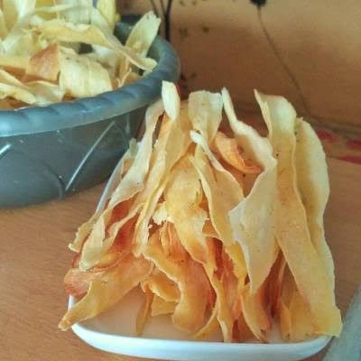

A crunchy snack!
Known as Cassava Chips, or Tapioca Chips, these are a crunchy snack that is made from thin slices of deep-fried
Cassava roots. Commonly found in Sri Lanka and South India! They're also well known in Indonesian, as Kripik
Singkong! A flavorful alternative to the potato chip!
Cassava Chips are quite good by themselves, but if willing you can go one step further and turn them into
Kripik Sanjai Balado it becomes something absolutely amazing! Deep-fry in
Coconut Oil for a more authentic Indonesian recipe!
Ingredients
- Cassava/Yuca
- Salt
- Water
- Oil; Only if pan-frying.
- Coconut Oil; Only if deep-frying.
Cassava Chips
- Peel the Cassava/Yuca
- Cut into approx. 4" rounds
- Boil water. Add salt.
- Add the Yuca rounds, boil for about 20-30 minutes or until fork-tender.
- Let cool
- Cut the rounds in half and remove any potential roots.
- Cut into thin slices. Try to have them as even as possible for best consistency.
Cooking Options
- Deep fry in Coconut Oil
Stove
- Using a large skillet or cast iron pan, heat 1/2" of oil on medium-high heat until hot.
- Add the slices in batches, turning once over until golden brown.
- Remove with splotted spoon and let drain over paper towels.
Oven
- Preheat oven to 425ºF
- Bake for 20-25 minutes or until slightly brown, turning over twice.

Now you're all done! You may enjoy your chips with some Sambal, Salsa, or you can add
Balado if you would like to try the amazing
Balado spices! I cannot recommend it enough!
Return to top
Return to homepage